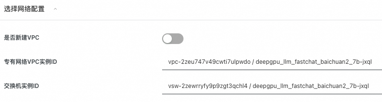
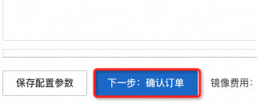

通义千问是由阿里巴巴集团旗下的阿里云开发的聊天机器人，能够与人交互、回答问题及协作创作。 qwen-72b是国内最大的开源模型，能为用户提供超强的交互能力。
deepgpu-llm是阿里云GPU云服务器专属的LLM加速套件，能够高效榨取GPU算力，提升LLM模型推理性能。阿里云客户可以免费获取和使用。
本文介绍如何基于计算巢快速构建基于DeepGPU-LLM加速的qwen-72b-chat对话机器人。
1 搭建流程
1.1 找到计算巢入口
在阿里云官网搜索“计算巢服务”，进入管理控制台，点击“服务市场”并搜索“qwen”找到服务入口（见下图）。
也可以点击下面链接直接进入服务。
1.2 选择部署地域
确保有机器，如果没有机器可以更换地域。由于qwen-72b模型非常大，限定了大显存GPU机型，受限于库存因素，推荐乌兰察布、日本东京或者韩国首尔等地域。
1.3 选择实例
1.4 设置机器ssh登陆密码
1.5 设置webui登陆密码

1.6 配置可用区

1.7 配置网络
选择新建VPC，默认即可，无需配置。
如果已有VPC（VPC数量会有限制，无法无限创建），就无需新建VPC，可以直接选择已有VPC。

1.8 选择模型和精度
由于显存限制，单卡GPU只能部署int8量化版本。
1.9 点击“下一步：确认订单”
系统会自动校验上述参数配置，校验通过后点击下一步。

1.10 勾选条款并点击“立即创建”

1.11 等待服务部署完成
大概需要5分钟～10分钟左右。
2 如何使用
部署完成后，就可以打开webui进行对话了。
2.1 打开实例，找到webui入口，点击进入
2.2 输入账号密码
参见1.5节设置的账号密码
2.3 等待模型初始化
LLM模型文件较大，模型初始化需要一定时间，请耐心等待（qwen-72b-chat加载和初始化需要大约18分钟）。刷新查看是否初始化完成，若初始化完成，下方红框部分会有具体模型名称显示。

2.4 输入对话内容，进行对话体验
初始化完成后，就可以进行对话了。
© 2009-2022 Aliyun.com 版权所有